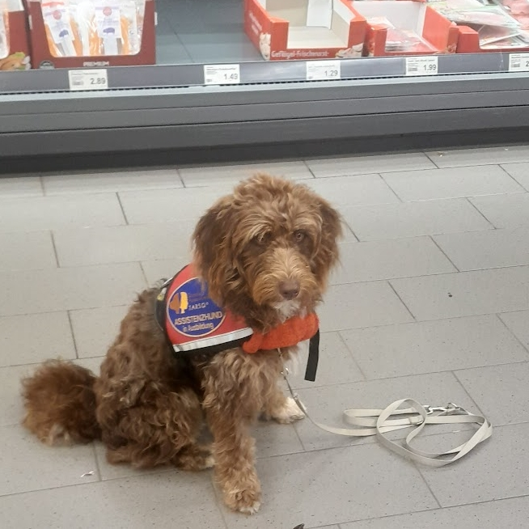

Assistenzhunde
Helfende Assistenzhundepfoten im Grund bietet Ihnen eine Assistenzhundeausbildung in Teilfremdausbildung oder in Selbstausbildung an. Die Ausbildung Ihres Assistenzhundes kann in Einzel- oder Gruppenstunden stattfinden.
Folgende Assistenzhundearten bilden wir aus:
- Warnhunde für Diabetes und Epilepsie
- Anzeigehunde
- PSB-Assistenzhunde (z.B. Autismus-Assistenzhunde, PTBS-Assistenzhunde, Demenzassistenzhunde)
- LpF-Assistenzhunde
- Signalhunde
Genauere Informationen über unsere Angebote und Preise finden Sie hier: